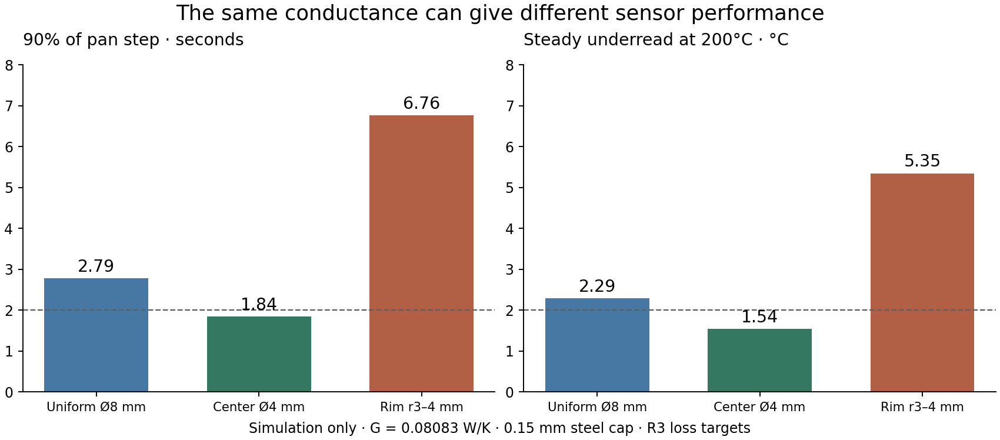

SIMULATION & TEST PREPARATION · HARDWARE NOT_RUN
R4 resolves heat spreading across the thin cap and exposes pressure loading from a sealed cavity. It also defines the remaining mechanical, assembly and detector acceptance gates.

These are controlled spatial hypotheses, not measured cookware results. The old 0.13 W/K scalar screen is insufficient for general contact. A thinner cap can make rim-contact response worse.
Keep the 0.15 mm cap for the next coupon. Establish contact near the RTD and reduce lead loss before selecting a thinner face. Define the complete pressure/liquid boundary before adding a seal. A jammed island still needs an independent diagnostic; fresh readings alone cannot establish contact.
| Gap | Status | Required evidence |
|---|---|---|
| spatial_model | ANALYZED_NOT_VALIDATED | radial_and_off_axis_reference_temperatures |
| sealed_pressure | CONFLICT_IDENTIFIED | pressure_balanced_or_qualified_equalization_design |
| seal_250C | OPEN | accepted_gland_membrane_and_complete_assembly_hot_wet_force_tests |
| jam_detection | OPEN | independent_observable_and_fault_coverage |
| retention | OPEN | weld_strength_wear_and_combined_load_requirements |
| bond_leads | OPEN | sectioned_bond_formed_harness_insulation_and_force_measurements |
| whole_system_accuracy | OPEN | declared_error_budget_and_independent_holdout |
| induction | NOT_RUN | qualified_RF_and_self_heating_test_results |
| physical_qualification | NOT_RUN | serial_and_lot_traced_measurements |
Model and decisions · Full closure contract · Verification · Sources and assumptions · Spatial results · Conditional inverse targets · Pressure screen · Reproduce
24 automated tests pass. No new sealed CAD, hardware measurements, firmware enablement or induction qualification is claimed.